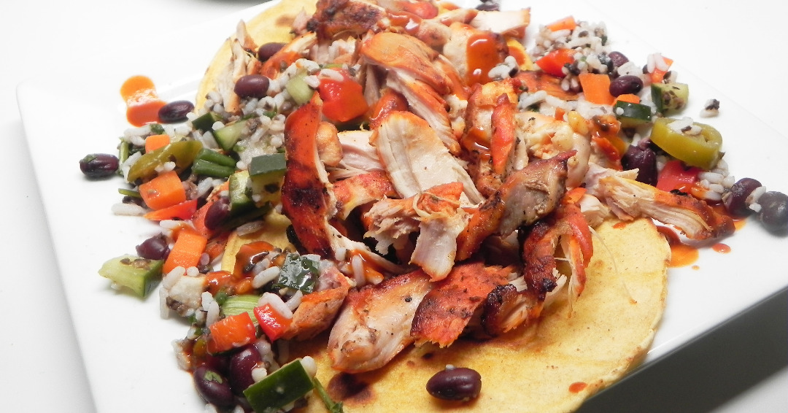

Tacos

Description
Warm tortillas filled with sauteed chicken. Serve with your
choices of garnishes and black beans.
Ingrediesnts
- 1 tsp cumin
- 1 tsp dried oregano
- 1 tsp sazon seasoning
- 1 tsp garlic powder
- 1 tsp salt
- 1/4 tsp cayenne pepper
- 1/4 cup fresh lime juice
- 1 tsp olive oil
- 1 lb chicken
- tortillas
Directions
- Combine cumin, oregano, sazon, garlic powder, salt,
and cayenne pepper in a large bowl. Add lime juice
and olive oil and stir to make the marinade. Add
chicken and refrigerate for 30 minutes to 12 hours.
- Preheat an outdoor grill for medium heat and lightly
oil the grate. Grill marinated chicken until no longer
pink at the bone and juices run clear, about 8 minutes
per side. Transfer to a bowl and shred chicken with
forks.
- Spray canola oil onto the tortillas and heat on the
grill approximately 45 seconds per side. Transfer to
a plate and cover with a paper towel to keep warm.
Serve with shredded chicken.